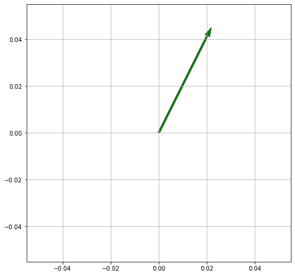

Eigenvectors
Key points
- Matrices as linear transformations
- Determinants
- Linear Systems
- Change of Bias
Scalar
- A scalar is a number, like :
- \( 2, -5, 0.368 \)
Vector
- Vector can be thought of as a list numbers (can be in a row or column)
-
has rows OR columns
-
2 numbers for 2D space, such as \( (2,4) \)
- \( \begin{bmatrix} 2 \\ 8 \end{bmatrix} \)
-
3 numbers for 3D space, such as \( (1,2,4) \)
- \( \begin{bmatrix} 1 \\ 2 \\ 4 \end{bmatrix} \)
-
- A vector can be in:
- magnitude and direction (Polar) form,
- or in x and y (Cartesian) form
import numpy as np
import matplotlib.pyplot as plt
def plot(V):
origin = np.array([[0, 0, 0],[0, 0, 0]]) # origin point
plt.figure(figsize=(8,8)) # 8 inches x 8 inches
plt.grid()
# Plot a 2D field of arrows.
plt.quiver(*origin, V[:,0], V[:,1], color=['r','b','g'], scale=10)
plt.show()
plot(np.array( [ [2,4] ] ) )

plot(np.array( [ [2,4], [2,3], [-2, 5] ] ) )

Matrix
-
A Matrix is an array of numbers (one or more rows, one or more columns)
-
Has rows x columns
-
\( \begin{bmatrix} 1 & 2 & 3 \\ 4 & 5 & 6 \\ 7 & 8 & 9 \end{bmatrix} \)
-
\( \begin{bmatrix} 1 & 0 & 0 \\ 0 & 1 & 0 \\ 0 & 0 & 1 \end{bmatrix} \)
-
Note:
- A vector is also a matrix!
- It is special case of a matrix with just one row or one column
- So the rules that work for matrices also work for vectors.
-
We can add and subtract matrices of the same size,
-
multiply one matrix with another as long as the sizes are compatible :
- \( (n × m) × (m × p) = n × p) \)
-
multiply an entire matrix by a constant:
Tensor
Tensor is a generalized matrix.
- 1-D matrix (a vector is actually such a tensor),
- 3-D matrix (something like a cube of numbers),
- 0-D matrix (a single number)
- a higher dimensional structure that is harder to visualize.
- The dimension of the tensor is called its rank.
Liner Transformation described by a matrix
This transformation in 2D :
\( \hat i \longrightarrow \begin{bmatrix} 3 \\ 0 \end{bmatrix} \)
\( \hat j \longrightarrow \begin{bmatrix} 1 \\ 2 \end{bmatrix} \)
is represented by the matrix: \( \begin{bmatrix} 3 & 1 \\ 0 & 2 \end{bmatrix} \)
-
Eigen vectors of the transformation
-
Each Eigen vector has Eigen value associated with it
-
Eigen value is the factor by which it will stretch or squash during the transformation
-
\( \begin{bmatrix} 3 \\ 0 \end{bmatrix} \) will stretch the length by factor of 3 during the transformation
- Eigen value here is 3
-
\( \begin{bmatrix} -1 \\ 1 \end{bmatrix} \) will stretch the length by factor of 2 during the transformation
-
- Eigen value here is 2
-
-
-
Eigen value with 1
- Provides rotation
- No stretching or squashing here, so length of the vector remains same
Eigen Value \( \lambda \)
- Matrix-Vector multiplication
\(A \vec{v} = \lambda \vec{v} \)
-
Scales the Eigen Vector \( \vec{v} \) by \( \lambda \)
-
\( A \) is Transformation matrix
-
\( \vec{v} \) is Eigen Vector of \( A \)
-
Left hand side is Matrix-Vector multiplication
-
Right hand side is Scalar-Vector multiplication
-
Let us make both side as Matrix-Vector multiplication
\(A \vec{v} = \lambda \vec{v} \)
- We can write the scalar \( \lambda \) as product of scalar and a Identity matrix \( I \):
\( \begin{bmatrix} \lambda & 0 & 0 \\ 0 & \lambda & 0 \\ 0 & 0 & \lambda \end{bmatrix} \longrightarrow \lambda \begin{bmatrix} 1 & 0 & 0 \\ 0 & 1 & 0 \\ 0 & 0 & 1 \end{bmatrix} \)
We can write this in terms of Identity matrix:
\( I = \begin{bmatrix} 1 & 0 & 0 \\ 0 & 1 & 0 \\ 0 & 0 & 1 \end{bmatrix} \)
as:
\(A \vec{v} = (\lambda I) \vec{v} \)
so both sides are now Matrix multiplication
so we get:
\(A \vec{v} - (\lambda I) \vec{v} = \vec 0 \)
let us factor out \( \vec{v} \)
\( (A - \lambda I) \vec{v} = \vec 0\)
we have a new Matrix
\( (A - \lambda I) \)
and determinant:
\( det (A - \lambda I) = 0 \)
So:
For this Matrix: \( \begin{bmatrix} 3 & 1 \\ 0 & 2 \end{bmatrix} \) find this Matrix:
\( det( \begin{bmatrix} 3-\lambda & 1 \\ 0 & 2-\lambda \end{bmatrix} ) = ( 3 - \lambda) (2 - \lambda) - (0)(1) = ( 3 - \lambda) (2 - \lambda) \)
we have a quadratic polynominal in \( \lambda \)
\( ( 3 - \lambda) (2 - \lambda) = 0 \)
only possible Eigen values are
\( \lambda = 3 \) or \( \lambda = 2 \)
References
\( \begin{pmatrix} a & b \\ c & d \end{pmatrix} \) \( \hat i \) to \( \begin{bmatrix} 3 & 5 \\ 0 & 10 \end{bmatrix} \) \( \longrightarrow \)